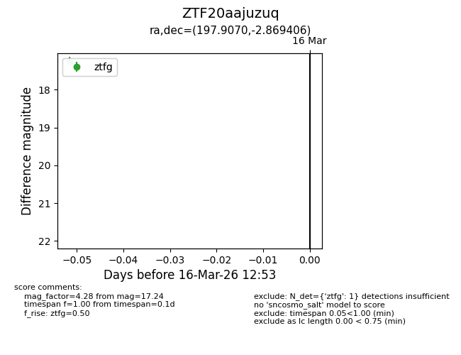
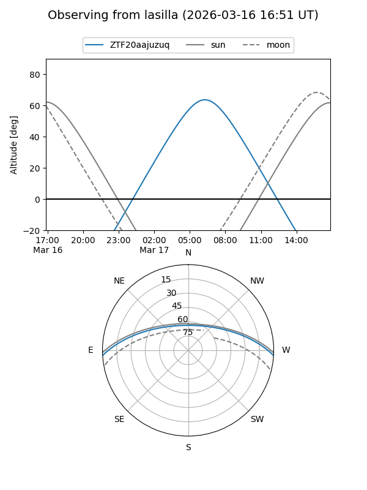
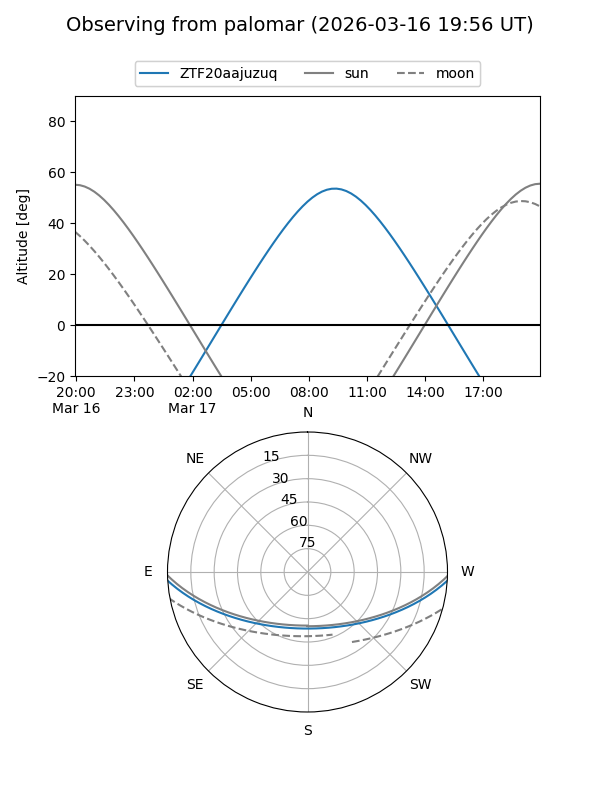

ZTF20aajuzuq
Target ZTF20aajuzuq at 2026-03-16 12:55
Aliases and brokers:
FINK: link
Lasair: link
ALeRCE: link
alt names
ZTF20aajuzuq (ztf,fink_ztf)
Coordinates:
equatorial (ra, dec) = 197.9070,-2.86941
equatorial (HMS+DMS) = 13:11:37.68,-02:52:09.86
galactic (l, b) = (312.9348,+59.60965)
Flags:
Photometry:
last ztfg=17.24
1 ztfg detections
Lightcurve

Visibility


Additional plots